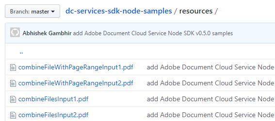

The Services SDK provides APIs for creating, combining, and exporting PDFs.
DC’s simple cloud-based APIs help you get up and running quickly. Once you’ve received your developer credential, download and set up one of the sample projects. After you’re familiar with the APIs, leverage the samples in your own server-side code.
Development on the DC Platform requires an Adobe-provided credential. Submit the request access form to request access to DC SDK. While the beta program participation is limited, the program will expand as the SDK evolves.
Jumpstart your development by bookmarking or downloading the following key resources:
This document
Java library. The Maven project contains the .jar file.
For security reasons you may wish to confirm the installer’s authenticity. To do so,
After installing the package, navigate to dc-services-sdk-0.5.0.1.jar.
Calculatate the hash with any 3rd party utility.
Find and open dc-services-sdk-0.5.0.1.jar.sha1. Note: if you’re using Maven, look in the .m2 directory.
Verify the hash you generated matches the value in the .sha1 file.
5f1910f1ddd103c579e45c3f1c03fbad8f3f43c8
Once you’ve been granted access to DC services, replace the dc-services-sdk-config.json file in the sample project with the one you receive from Adobe.
Example dc-services-sdk-config.json file
{
"identity": {
"type": "techacct",
"client_id": "<YOUR_CLIENT_ID>",
"client_secret": "<YOUR_CLIENT_SECRET>",
"private_key": "---BEGIN RSA PRIVATE KEY---\nXXXXX..XXXX\n---END RSA PRIVATE KEY-----\n",
"claim": "https://ims-na1.adobelogin.com/s/ent_documentcloud_sdk",
"issuer": "<YOUR_ORGANIZATION_ID>",
"subject": "<YOUR_TECHINCAL_ACCOUNT_ID>"
},
"connectTimeout": "2000",
"readTimeout": "10000",
"uploadReadTimeout":"60000"
}
Timeout properties are inferred and provide defaults. Manually add the properties to your configuration file if you prefer to use custom values. Communication times with Adobe servers are configurable as follows:
connectTimeout: Default: 2000. The maximum allowed time in milliseconds for creating an initial HTTPS connection.
readTimeout: Default: 10000. The maximum allowed time in milliseconds between two successive HTTP response packets.
uploadReadTimeout: Default: 60000. The read timeout in milliseconds for file upload requests.
The quickest way to get up and running is to set up and configure the sample project. The project provides everything from ready-to-run sample code, a config file for your credential details, and pre-configured connections to dependencies such as the dc-services-sdk.jar file.
Note
Maven uses pom.xml to fetch dc-services-sdk from the public Maven repository when running the project. The .jar automatically downloads when you build the sample project.
Environment setup:
Install Java 8 or above.
Run javac -version to verify your install.
Verify the JDK bin folder is included in the PATH variable (method varies by OS).
Install Maven. You may use your preferred tool; for example:
Windows: Example: Chocolatey.
Macintosh: Example:
brew install maven.
Note
Alternatively, you can download the dc-services-sdk jar file, and configure your own environment.
Sample project setup:
Download the sample project.
Find and open dc-services-sdk-config.json.
Enter your authentication credentials and save the file.
Build the sample project with Maven: mvn clean install.
Test the sample code on the command line. Refer to the How Tos for details about running samples. Additional details also reside in the Javadoc.
Tip
Command line execution is not mandatory. You can import the samples Maven project into your preferred IDE (e.g. IntelliJ/Eclipse) and run the samples from there.
Refer to the API docs for error and exception details.
For logging, use the slf4j API with a log4j2-slf4j binding.
Logging configurations are provided in src/main/resources/log4j2.properties.
Specify alternate bindings, if required, in pom.xml.
log4j2.properties file
name=PropertiesConfig
appenders = console
# A sample console appender configuration which clients can change as needed.
rootLogger.level = WARN
rootLogger.appenderRefs = stdout
rootLogger.appenderRef.stdout.ref = STDOUT
appender.console.type = Console
appender.console.name = STDOUT
appender.console.layout.type = PatternLayout
appender.console.layout.pattern = [%-5level] %d{yyyy-MM-dd HH:mm:ss.SSS} [%t] %c{1} - %msg%n
loggers = dcservicessdk,validator,apache
# Change the logging levels as desired. INFO is recommended.
logger.dcservicessdk.name = com.adobe.platform.operation
logger.dcservicessdk.level = INFO
logger.dcservicessdk.additivity = false
logger.dcservicessdk.appenderRef.console.ref = STDOUT
logger.validator.name=org.hibernate
logger.validator.level=WARN
logger.apache.name=org.apache
logger.apache.level=WARN
The sample files reference input and output files located in the sample project’s /resources/ directory. You can of course modify the files and paths or use your own files.
While the samples use Maven, you can use your own tools and process.
To build a custom project:
Access the dc-services-sdk .jar in the central Maven repository.
Use your preferred dependency management tool (Ivy, Gradle, Maven), to include the SDK .jar.
Manually create dc-services-sdk-config.json.
Add the Authentication details as described above.
Jumpstart your development by bookmarking or downloading the following key resources:
This document
Input/output test files reside in the their respective sample directories
The samples project requires the following:
.NET Core: version 2.1 or above
A build Tool: Either Visual Studio or .NET Core CLI.
Once you’ve been granted access to DC services, replace the dc-services-sdk-config.json file in the sample project with the one you receive from Adobe.
Example dc-services-sdk-config.json file
{
"identity": {
"type": "techacct",
"client_id": "<YOUR_CLIENT_ID>",
"client_secret": "<YOUR_CLIENT_SECRET>",
"private_key": "---BEGIN RSA PRIVATE KEY---\nXXXXX..XXXX\n---END RSA PRIVATE KEY-----\n",
"claim": "https://ims-na1.adobelogin.com/s/ent_documentcloud_sdk",
"issuer": "<YOUR_ORGANIZATION_ID>",
"subject": "<YOUR_TECHINCAL_ACCOUNT_ID>"
},
"timeout": "2000",
"uploadTimeout": "400000",
"readWriteTimeout": "10000"
}
Timeout properties are inferred and provide defaults. Manually add the properties to your configuration file if you prefer to use custom values. Communication times with Adobe servers are configurable as follows:
timeout: Default: 2000. The maximum allowed time in milliseconds for establishing a connection, sending a request, and getting a response.
uploadTimeout: Default: 400000. The maximum allowed time in milliseconds for the file upload request.
readWriteTimeout: Default: 10000. The maximum allowed time in milliseconds to read or write data after connection is established.
The quickest way to get up and running is to set up and configure the sample project. The project provides everything from ready-to-run sample code, a config file for your credential details, and pre-configured connections to dependencies. Running any sample or custom code requires the following steps:
Download and install the .NET SDK.
Download the Nuget package.
Clone or download the samples project.
Find and open dc-services-sdk-config.json.
Enter your authentication credentials and save the file. As each sample resides in its own project directory, you’ll need to copy the config.json file there.
Once configured, navigate to the sample project directory you’d like to run, open the project, and execute the sample as descibed in the Readme or in the How Tos.
For security reasons you may wish to confirm the installer’s authenticity. To do so,
After installing the Nuget package, navigate to the .nuget directory.
Find and open adobe.documentcloud.services.0.5.0.nupkg.sha512.
Verify the hash in the downloaded file matches the value published here.
P8i3E6ddlRAC4vrED6cq9AWGGdKzVIKhZFnBNsJVm8nGT/v3jm9E2FE2z+igzdc/CQBXplGYNhCRT4669CdktQ==
Refer to the API docs for error and exception details.
The .NET SDK uses LibLog as a bridge between different logging frameworks. Log4net is used as a logging provider in the sample projects and the logging configurations are provided in log4net.config. Add the configuration for your preferred provider and set up the necessary appender as required to enable logging.
log4net.config file
<log4net>
<root>
<level value="INFO" />
<appender-ref ref="console" />
</root>
<appender name="console" type="log4net.Appender.ConsoleAppender">
<layout type="log4net.Layout.PatternLayout">
<conversionPattern value="%date %level %logger - %message%newline" />
</layout>
</appender>
</log4net>
Refer to each sample directory for the requisite input/output files.
Jumpstart your development by bookmarking or downloading the following key resources:
This document
Once you’ve been granted access to DC services, replace the dc-services-sdk-config.json file in the sample project with the one you receive from Adobe. You can also use Runtime in-memory authentication.
Example dc-services-sdk-config.json file
{
"identity": {
"type": "techacct",
"client_id": "<YOUR_CLIENT_ID>",
"client_secret": "<YOUR_CLIENT_SECRET>",
"private_key": "---BEGIN RSA PRIVATE KEY---\nXXXXX..XXXX\n---END RSA PRIVATE KEY-----\n",
"claim": "https://ims-na1.adobelogin.com/s/ent_documentcloud_sdk",
"issuer": "<YOUR_ORGANIZATION_ID>",
"subject": "<YOUR_TECHINCAL_ACCOUNT_ID>"
},
"connectTimeout": "2000",
"readTimeout": "10000",
"uploadReadTimeout":"60000"
}
Timeout properties are inferred and provide defaults. Manually add the properties to your configuration file if you prefer to use custom values. Communication times with Adobe servers are configurable as follows:
connectTimeout: Default: 2000. The maximum allowed time in milliseconds for creating an initial HTTPS connection.
readTimeout: Default: 10000. The maximum allowed time in milliseconds between two successive HTTP response packets.
uploadReadTimeout: Default: 60000. The read timeout in milliseconds for file upload requests.
Running any sample or custom code requires the following steps:
Environment setup:
Install Node.js 10.0 or higher.
Install Adobe’s DC Node.js SDK:
npm install --save @adobe/dc-services-node-sdk
Sample project setup:
Download the sample project.
Find and open dc-services-sdk-config.json.
Enter your authentication credentials and save the file.
From the root directory, run:
npm install
Note
package.json lists the DC Services SDK as a dependency, and it downloads automatically.
Test the sample code on the command line. Refer to the How Tos for details about running samples. Additional details also reside in the API reference.
For security reasons you may wish to confirm the installer’s authenticity. To do so,
After installing the package, find and open package.json.
Find the “_integrity” key.
Verify the hash in the downloaded file matches the value published here.
sha512-dDctEEmy81BghHUlPCvEzWegTWEQUXfDOBt+dEPiVTVHW57xAPf4JGBP6nzG3zCBL/lerWqn+IGMAc/SQCdhZQ==
Refer to the API docs for error and exception details.
The SDK uses the use the log4js API for logging. During execution, the SDK searches for config/dc-sdk-log4js-config.json in the working directory and reads the logging properties from there. If you do not provide a configuration file, the default logging logs INFO to the console. Customize the logging settings as needed.
log4j2.properties file
{
"appenders": {
"consoleAppender": {
"_comment": "A sample console appender configuration. Customize the logging implementation as needed.",
"type": "console",
"layout": {
"type": "pattern",
"pattern": "%d:[%p]: %m"
}
}
},
"categories": {
"default": {
"appenders": [
"consoleAppender"
],
"_comment": "INFO is the minimum recommended log level for the DC SDK.",
"level": "info"
}
}
}
Refer to each sample project’s resource directory for the requisite input/output files.
